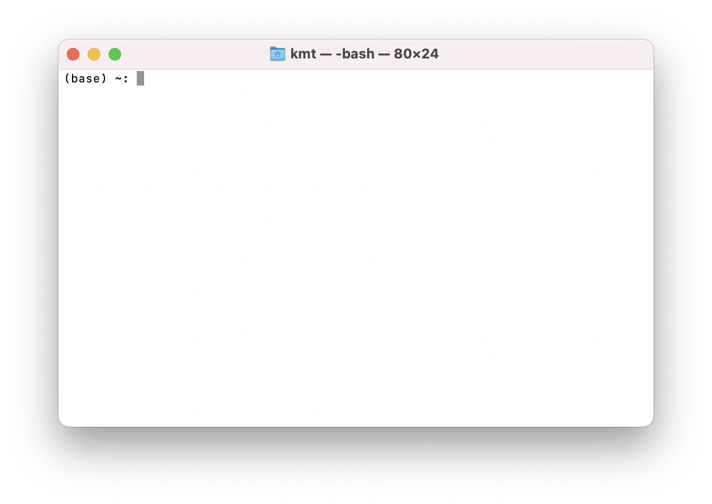
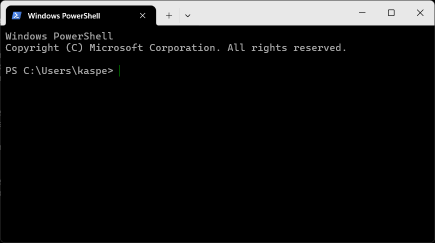

7 Getting started
This chapter will get your computer set up with what you need for the course. You need to carefully read the instructions and follow them to the letter. Some of the instructions differ between Mac and Windows. In those cases you will see two tabs like the ones below. Pick the right one now to make entire page reflect your choice:
Yes, Mine is a Mac computer!
Yes, Mine is a Windows computer!
If one of the steps below does not do what it should, read If something goes wrong at the bottom, and bring the exact error message to class. Do not try to complete the steps by some alternative means. That will only sink you deeper into the quicksand.
The course folder
Everything you work on for this course should go in a a folder I prepared for you. Download it now:
On Mac, you double-click to unpack the zip file. Then move the folder somewhere plain and short that belongs to you. Your user/home folder is the best place. Do not put it in OneDrive or iCloud Drive. They sync files in and out from under you while Python is reading them, and that produces errors nobody can explain.
curl -fsSL https://pixi.sh/install.sh | shOn Windows, you right-click and select “Extract all”. When asked to “Select a Destination”, click “Browse” and choose the folder you want to put the instructing-machines folder in - choose somewhere plain and short that belongs to you. Your user/home folder is the best place. Do not put it in OneDrive or iCloud Drive. They sync files in and out from under you while Python is reading them, and that produces errors nobody can explain.
The terminal
On Mac, the terminal is an application called Terminal. You can find it by typing “Terminal” in Spotlight Search. When you start it, you will see something like Figure 7.1. On Windows, it is called Windows PowerShell, and you should be able to find it from the Start menu — make sure you open Windows PowerShell and not some other shell (the name should be exactly that). When you do, you should see something like Figure 7.2.


What are Windows PowerShell and this Terminal thing? Both are what we call terminal emulators. They are used to run other programs, like the ones you will write yourself. I will informally refer to both as “the terminal”. So if I write something like “open the terminal”, you should open Windows PowerShell if you are running Windows and the Terminal application if you are on a Mac.
The terminal is a very useful tool. However, to use it, you need to know a few basics. First of all, a terminal lets you execute programs on your computer. You type the command you want and then hit Enter. The first word of commands is always the name of a program. The place where you type is called a prompt (or command prompt), and it may look a little different depending on which terminal emulator you use. In this book, we represent the prompt with the character >. So a command in the examples below is the line of text to the right of the >.
You can navigate your folders in terminal the same way you do in Finder on mac and File Explorer on Windows. When you open the terminal, you are put in your user folder. You can see which folder you are in by typing pwd, and then pressing Enter on the keyboard. When you press Enter, you tell the terminal to execute the command you have written to run the pwd program. In this case, the command you typed tells you the path to the folder we are in. If I do it, I get:
Terminal
> pwd
/Users/kasper/instructing-machinesSo, right now, I am in the instructing-machines folder. /Users/kasper/instructing-machines is the folder’s path or “full address”, with slashes (or backslashes on Windows) separating nested folders. So instructing-machines is a subfolder of kasper, which is a subfolder of Users. That way, you know which folder you are in and where that folder is.
Let us see what is in this folder. You can use the ls command (l as in Lima and s as in Sierra). When I do that and press Enter I get the following:
Terminal
> ls
course.py get.py pixi.toml week1
data pixi.lock projects update.pyThere seem to be three folder: data, projects, and week1. If you are curious about what is inside the week1 folder, you can “walk” into the folder with the cd command. To use this command, you must specify which folder you want to walk into (in this case, week1). We do this by typing cd, then a space, and then the folder’s name. When I press Enter I get the following:
Terminal
> cd week1
>It seems that nothing really happened, but if I run the pwd command now to see which folder I am in, I get the following:
Terminal
> pwd
/Users/kasper/instructing-machines/week1Just to keep track of what is happening: before we ran the cd command, we were in the /Users/kasper/instructing-machines folder, and now we are in /Users/kasper/instructing-machines/week1. This means that we can now use the ls command to see what is in the week1 folder:
Terminal
> ls
notebooks-in-vscode.ipynb script-vs-notebook.ipynbSo week1 contains two notebook files (you can tell by their .ipynb suffix). Don’t try to open them yet. Let us go back to where we came from. To walk “back” or “up” to /Users/kasper/instructing-machines, we again use the cd command, but we do not need to name a folder this time. Instead, we use the special name .. to say that we wish to go to the parent folder, i.e. the folder we just came from:
Terminal
> cd ..
> pwd
/Users/kasper/instructing-machinesHopefully, you can now navigate your folders and see what is in them. You will need this later to reach the folders with the code you write for the exercises and projects during the course. There are many other commands that you may learn along the way, but for now, the only ones you need are:
| Action | Windows | Mac |
|---|---|---|
| Show current folder | pwd |
pwd |
| List folder content | ls |
ls |
| Go to subfolder “notes” | cd notes |
cd notes |
| Go to parent folder | cd .. |
cd .. |
Installing pixi
Pixi is the program that installs Python for you along with all the packages you need for the course. To avoid conflicts between multiple projects that use Python, Pixi installs one self-contained Python per project folder (in your case the instructing-machines folder). It lives in a hidden .pixi folder inside the course folder, nothing is installed anywhere else, and deleting the course folder removes every trace of it. So the Python we use cannot collide with a Python you install next year for something else, and if your installation ever ties itself in a knot, the cure is to delete the .pixi folder and start again.
Open your Terminal application. Click the small clipboard icon, which appears when you hover over the command, paste the command into your terminal and press Enter.
curl -fsSL https://pixi.sh/install.sh | shDownload and run the installer:
https://github.com/prefix-dev/pixi/releases/latest/download/pixi-x86_64-pc-windows-msvc.msi
Double-click it and click through. That is all.
If you have one of the rare ARM-based Windows machines — a Surface Pro X, for instance — use pixi-aarch64-pc-windows-msvc.msi instead.
Now, whichever machine you are on: close the terminal window and open a new one.. A program that has just been installed is invisible to terminals that were already open. A terminal reads the list of available programs once, when it starts, and does not look again. So the terminal you installed pixi from does not know pixi exists. This one detail is responsible for more confusion than everything else on this page combined.
To check that it worked, paste this line and press Enter:
pixi --versionIt should print something like: “pixi 0.60.0”. You will probably see a different version number, and that is fine. If you instead see something about the command not being recognized, see If something goes wrong.
Install the pixi environment in your course-folder
Having installed the Pixi package manager, we can now use it to install all the packages we need for the course, right in your instructing-machines folder. Open a new terminal, navigate to the instructing-machines folder using cd and run this command:
pixi install && pixi global install -c conda-forge -c munch-group im-course-toolsWhen it is done there is a new hidden .pixi folder in the course folder containing your very own Python.
Then check it by running this in the terminal:
pixi run checkIf it prints “Everything is installed. Python 3.13.5”, you are finished with the hard part.
The check in that command is not a built-in pixi command — it is a little errand we wrote for you and stored in the folder’s pixi.toml file.
If pixi install fails, it may be because you have antivirus software (other than Microsoft Defender) that blocks Pixi from downloading packages. Here are instructions for how do do this for: BitDefender, Norton, McAfee, Kaspersky.
The text editor
You will also need a text editor. A text editor is where you write your Python code. For this course, we will use Visual Studio Code — or VS Code for short. You can download it from code.visualstudio.com. If you open VS Code, you should see something like Figure 7.3.
You may wonder why we cannot use Word to create and edit files with programming code. The reason is that a text editor made for programming, such as VS Code, only saves the actual characters you type. So, unlike Word, it does not silently save all kinds of formatting, like margins, boldface text, headers, etc. With VS Code, what you type is exactly what is in the file when you save it. In addition, where Word is made for prose, VS Code is made for programming and has many features that will make your programming life easier.

Opening the folder
Start VS Code. What follows is four small steps, and they have to happen in this order. Each one only works if the one before it has happened already, which is why a step skipped here does not complain at the time. It shows up two minutes later as a kernel that is not in the list, and that looks like a broken installation when it is nothing of the sort.
1. Open the folder, not a file
The first time you start VS Code it greets you with a welcome screen that wants you to sign in. Nothing on this course needs an account, so click Continue without signing in.
Then choose File → Open Folder… and select the instructing-machines folder — the folder itself, not a file inside it.
This matters more than it looks like it does. The course folder carries a small settings file that tells VS Code where the course Python lives, and VS Code only reads that file when the folder is what you opened. Open a single file instead and VS Code has no idea any of this exists.
2. Trust the folder
VS Code has opened your folder in Restricted Mode. That means it has switched off every extension until you tell it the folder is safe, and it will not interrupt you to ask. Newer versions wait for you to say so instead, which is exactly why this step is so easy to walk straight past.
Look at the bottom left corner of the window. There is a blue Restricted Mode button sitting there. Click it, then click Trust in the panel that opens, and close the panel again. The blue button disappears, and that is how you know it worked.
Do this before you install anything. Extensions do not run in Restricted Mode, so installing them first and trusting afterwards leaves you with extensions that are installed and switched off — which on screen looks exactly like extensions that were never installed at all. Trust first, then install.
3. Install the four extensions
Open the Extensions panel on the left — the icon made of small squares — and type @recommended into its search box. That lists exactly the extensions this folder asks for, under the heading Workspace Recommendations. Install each one, then come back here.
VS Code sometimes also offers to install them for you in a small notification. If you get one, use it. Do not wait for one: it does not always appear, and the search above works whether it does or not.
There are four, and you want all four. Python support runs your code. Jupyter support runs notebooks. Pixi support is the one that goes looking inside your .pixi folder and finds the Python that pixi install built there — without it, the course Python is invisible to VS Code no matter how correctly you installed it. Quarto support is what makes the notes look like the notes: these chapters are written in Quarto’s flavour of markdown, and without it the coloured boxes and other niceties turn up as raw text with stray colons around them.
4. Reload the window
When the extensions have finished, reload the window. VS Code may offer to; if it does, say yes. If it does not, do it yourself: press Ctrl+Shift+P (Cmd+Shift+P on a Mac) to open the command palette, type Developer: Reload Window, and press Enter.
This one is not optional. An extension installed while the folder was already open does not always go back and look at the folder again, and the pixi one is like that. The reload is what sends it to find your .pixi folder. Skip it and the kernel you are about to choose is simply not in the list, and the coloured boxes in these notes stay as raw text with stray colons around them.
If something goes wrong
- “pixi is not recognized as an internal or external command” (Windows). The terminal you are typing in was opened before pixi was installed. Close it and open a new one. If you are inside VS Code, quit VS Code entirely and start it again.
- “command not found: pixi” (Mac). The terminal you are typing in was opened before pixi was installed. Close it and open a new one. If you are inside VS Code, quit VS Code entirely and start it again.
- Windows says a script cannot be run, or mentions an execution policy. You have found a PowerShell install script somewhere. Do not fight with it — use the
.msiinstaller linked in Installing pixi instead. It needs no permissions of that kind. pixi installfails part-way, or complains about paths being too long. The folder is almost certainly too deep, or inside OneDrive. Move the whole folder toC:\bioprog\and runpixi installagain.- The window still says Restricted Mode, or nothing Python-related works at all. The folder is untrusted, which is how VS Code opens every new folder now, and extensions do not run until you change it. Click the blue Restricted Mode button in the bottom left corner, then Trust (Opening the folder, step 2). Then reload the window, because the extensions have been sitting switched off until this moment.
- There is no
Instructing Machinesentry in the kernel list. It is created bypixi run check, so run that first if you have not. If it is still missing, make sure you opened the folder (Opening the folder), thatpixi installhas finished, and that the recommended extensions are installed. Then runDeveloper: Reload Windowfrom the command palette (Ctrl+Shift+P, orCmd+Shift+Pon a Mac), which makes VS Code look again. - A widget shows as blank space, or as raw text. You are running the notebook on the wrong Python. Click
Select Kernelin the top right of the notebook and choose the one whose path contains.pixi. - Nothing works and the lecture has already started. Open the course website and use the in-browser notebooks. They run Python inside the browser with nothing installed, they are slower and slightly limited, and they will get you through the next hour. Then come to the study café and we will fix your installation properly.
If you see red text you cannot place, take a screenshot — or better, copy the text itself — and send it to kaspermunch@birc.au.dk. Bring the exact message, not a description of it. Reading error messages is one of the things this course is actually about.
You are all set
Well done! You are all set to start the course. Have a cup of coffee, and look forward to your first program.